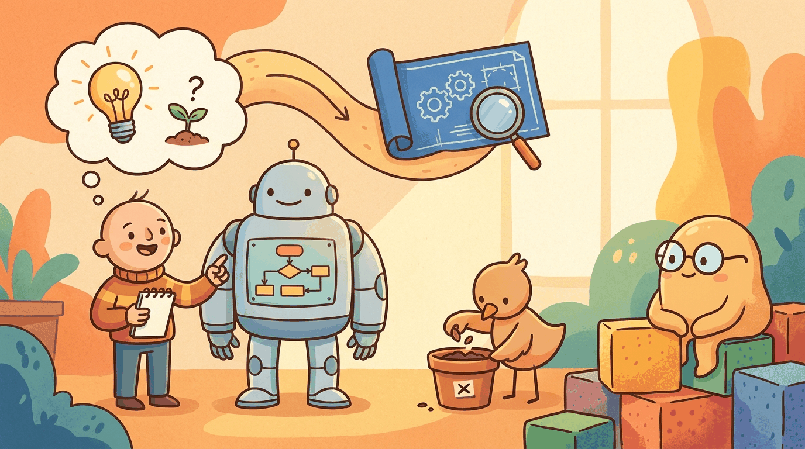

"Everyone has a demo that works once. The hard part is building something that works a thousand times, for a thousand different users, without bankrupting you on API costs."
Compass, Cost Conscious AI Agent
Part X looked forward in time; Part XI looks forward in your project. This chapter is for someone with an idea for an LLM product, asking: how do you go from "what if we used an LLM to do X" to a validated, scoped prototype? Choosing the model's role, risk and feasibility assessment, the observe-steer development loop, the founder's prototype loop, and documentation as a control surface. The shortest path from idea to MVP in this field is rarely a straight line; this chapter shows the curves.
Chapter Overview
Building an AI product is not primarily an engineering scheduling problem; it is a feasibility-and-evidence problem. AI shifts product design toward roles the model can perform reliably enough, cheaply enough, and fast enough to be useful in a workflow. This chapter gives you the frameworks to navigate that shift before writing a single line of production code.
You will learn to frame AI product hypotheses, choose the right model role from a taxonomy of patterns (scout, drafter, filter, ranker, verifier), assess technical and regulatory feasibility with a scoring framework, and study real-world case studies that illustrate how role assignment decisions play out in practice. Every section produces a concrete, reusable artefact: an AI Role Canvas, a Feasibility Scorecard, and a Role Assignment Brief.
This chapter explicitly references (not re-teaches) the technical depth from earlier chapters: APIs (Ch 11), prompting (Ch 12), RAG (Ch 19), evaluation (Ch 28), and strategy (Ch 31). Its unique contribution is the hypothesis-formation stage: the thinking that happens before the build loop begins (covered in Chapter 68) and the shipping decisions that follow (covered in Chapter 69).
Parts I through X taught you how LLMs work, how to prompt and fine-tune them, and how to deploy them safely. This chapter is where all of that knowledge converges into a product decision: given an idea, should you build it, and if so, what role should the model play? The frameworks here (AI Role Canvas, Feasibility Scorecard) give you a structured way to evaluate feasibility before committing engineering resources, feeding directly into the build loop of Chapter 68 and the shipping decisions of Chapter 69.
The reference production-scale success story is Klarna's Feb 2024 rollout, which handled 2.3M conversations in its first month and demonstrated that a tightly scoped role assignment (FAQ-style customer service, with deterministic escalation paths) can scale. The cautionary counterpart is DPD's chatbot incident (Jan 2024), where a parcel-delivery support bot, asked the wrong way, swore at customers and wrote a poem mocking the company: a role-assignment failure where the model was given too much linguistic latitude with too little adversarial-input training.
Learning Outcomes
- Convert an idea into an AI product hypothesis with explicit model role, data needs, risk tier, and cost assumptions
- Choose an initial architecture pattern (API-only, RAG, tool-using agent, hybrid) using the book's decision framework
- Assign model roles from a taxonomy of patterns: scout, drafter, filter, ranker, verifier
- Score feasibility across technical, data, regulatory, and economic dimensions before committing to a build
- Analyze real-world case studies to see how role assignment decisions succeed or fail in practice
- Chapter 13: LLM APIs (making API calls, structured output)
- Chapter 14: Prompt Engineering (prompt design, guardrails)
- Chapter 31: Strategy & ROI (enterprise lens on AI adoption)
- Basic Python proficiency and familiarity with REST APIs
Sections
- 68.1 What Makes AI Products Different Probabilistic behaviour, human-AI UX, ML maintenance debt, and agentic failure modes that distinguish AI products from traditional software.
- 68.2 Choosing the Model's Role The copilot-to-autopilot spectrum, role assignment patterns (drafter, classifier, router, researcher, verifier), and the AI Role Canvas deliverable.
- 68.3 Risk and Feasibility Assessment Feasibility-first product design, error tolerance scoring, the Technical Feasibility Matrix, data readiness, regulatory pre-screening, and the Feasibility Scorecard deliverable.
- 68.4 The Observe-Steer Development Loop Responsible vibe coding, observe-steer loops, documentation as control, lock-in dynamics, and the Intent + Evidence Bundle deliverable.
- 68.5 The Founder's Prototype Loop Vertical-slice prototyping, the Build-Measure-Steer loop, AI coding assistants for scaffolding, and a five-stage Prototype Playbook mapping to book chapters.
- 68.6 Documentation as Control Surface How documentation shifts from describing what was built to controlling what will be built next in AI-assisted development.
- 68.7 From Prototype to MVP Quality gates by role type, MVP evaluation contracts, monitoring readiness, fallback strategies, user feedback loops, and architecture hardening for production AI products.
What's Next?
The next chapter, Chapter 69: Shipping and Scaling AI Products, picks up where this one ends. Once you have a validated product hypothesis and a working prototype, Chapter 69 covers the engineering and operational steps to take it from MVP to production at scale.